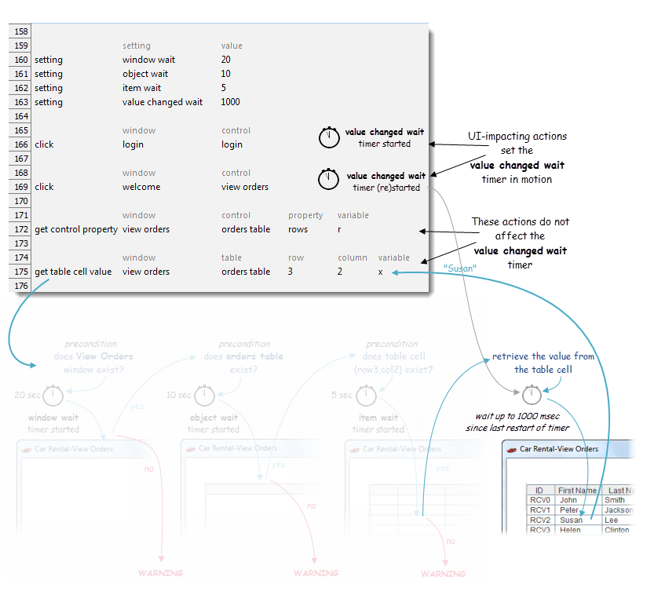

value changed wait
The value changed wait setting is concerned with the delays that may be incurred in the changing of a value or state in the AUT's interface after a UI-modifying action has executed.
Imagine, as an example, an AUT window with a button which, when clicked, inserts a new value into a text field. We test this with a click action on the button, followed by a get control property action line which samples the text field. But what if the AUT is a bit slow in its response to the click? In that case, we need to deal with the risk that the get action may sample the text box before the expected change in value takes place.
The value changed wait timer, which is used by a number of get and check actions, allows for the possibility of such latency on the part of the AUT. When a value changed wait-observant action executes, it continues sampling its target UI element at 100ms intervals until the value being sampled changes, or until the timer runs out, whichever comes first. (If the timer does time out, the assumption is that the sampled property either didnt undergo a change, or changed prior to the first sample being taken.)
One notable difference between value changed wait and other timers is that the value changed wait timer is not triggered by the actions that use it. Instead, the timer is reset and restarted each time a UI-modifying action, such as a click or enter action, executes.
It is important that you take special care when setting the value of value changed wait. Unlike the case with other timing settings like object wait, a non-zero value changed wait setting can have the effect of slowing down your test, if you have an AUT that responds reasonably quickly. That is because value changed wait-observant actions look for a change rather than a given state. If that change has already occurred prior to the first sampling, or if the last UI-modifying action doesnt result in any change, the get or check waits out the entire remaining time on the value changed wait clock.
Hence it is highly recommended that you set value changed wait to zero, at least initially. If indeed you find that there are some places in your test cases where a non-zero value changed wait is necessary, it is recommended that you use the setting action to set the non-zero value just prior to where its needed, then reset value changed wait to zero immediately afterwards.
The figure below continues the example of the get table cell value action discussed earlier. In this case, we assume that all the precondition checks have been passed, and they have been dimmed in the figure because we are now concerned only with the final stage of the action, involving retrieval of the table cell value. At this point, before retrieving the value, the automation waits for the value changed wait timer to run out, or for the cell value to change, whichever comes first.

Note that, depending on the context, a given value changed wait-observant get or check action may effectively ignore the timer and grab its target value immediately upon the first sampling. This is the case, for example, if the test has not yet performed any UI-modifying actions. In such cases, there is no reason to assume that the sampled value will change after any given period of time.
Note also that, given the fact that the value changed wait timer is restarted by the last UI-modifying action, it is also possible for it to have already timed out by the time a given check or get is executed. In such cases, again, only a single sample is taken, and that is the retrieved value.
Share Via...